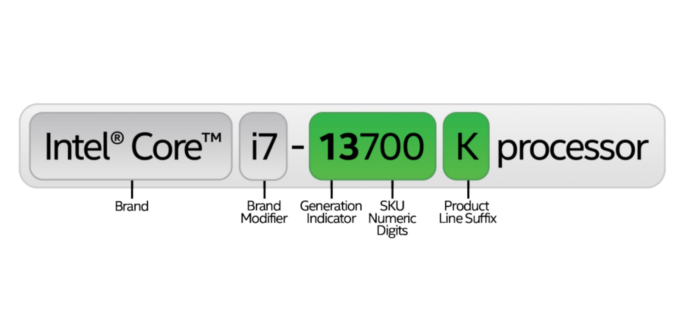

부품 고르는 법 - 부품 별 선택방법
Intel
 인텔 CPU가 더 최적화되어 있어 성능이 우수한 프로그램들은 주로 단일 스레드 성능과 고클럭에 의존하는 작업에 강점을 보입니다. 예를 들어, Adobe Photoshop과 Premiere Pro 같은 영상 편집 프로그램은 인텔의 Quick Sync 비디오 하드웨어 가속 덕분에 인코딩 및 렌더링에서 높은 효율을 발휘하는데, 이를 사용하려면 인텔 내장 그래픽이 포함된 CPU 모델이 필요합니다. 또한 Microsoft Office 제품군은 인텔 CPU에서 조금 더 부드러운 실행과 빠른 응답 속도를 제공하며, MATLAB과 같은 과학 계산 소프트웨어는 인텔의 MKL 라이브러리 최적화를 통해 고성능 연산을 지원합니다. 이처럼 인텔 CPU는 단일 스레드 성능과 특정 하드웨어 가속 기능을 활용하는 프로그램에서 최적화가 잘 되어 있어 해당 작업에서 좋은 성능을 보여줍니다.
인텔 CPU가 더 최적화되어 있어 성능이 우수한 프로그램들은 주로 단일 스레드 성능과 고클럭에 의존하는 작업에 강점을 보입니다. 예를 들어, Adobe Photoshop과 Premiere Pro 같은 영상 편집 프로그램은 인텔의 Quick Sync 비디오 하드웨어 가속 덕분에 인코딩 및 렌더링에서 높은 효율을 발휘하는데, 이를 사용하려면 인텔 내장 그래픽이 포함된 CPU 모델이 필요합니다. 또한 Microsoft Office 제품군은 인텔 CPU에서 조금 더 부드러운 실행과 빠른 응답 속도를 제공하며, MATLAB과 같은 과학 계산 소프트웨어는 인텔의 MKL 라이브러리 최적화를 통해 고성능 연산을 지원합니다. 이처럼 인텔 CPU는 단일 스레드 성능과 특정 하드웨어 가속 기능을 활용하는 프로그램에서 최적화가 잘 되어 있어 해당 작업에서 좋은 성능을 보여줍니다.
인텔은 14세대까지 Core i3, i5, i7, i9이라는 기존의 명칭 체계를 유지하고 있으며, 모델 번호를 통해 세대를 직관적으로 구분할 수 있습니다. 예를 들어, i9-14900K는 14세대 프로세서를 의미합니다. 이 명칭에서 'i' 뒤의 숫자가 높을수록 더 높은 성능과 더 많은 코어, 더 큰 캐시 용량 등을 갖춘 상위 라인업임을 나타냅니다. 즉, i3보다 i5, i7, i9 순으로 성능과 기능이 향상됩니다. 추가적으로 인텔 CPU의 모델명에서 뒤 세 자리 숫자는 같은 세대, 같은 라인업 내에서도 성능 차이를 구분하는 데 사용되며, 이 숫자가 높을수록 일반적으로 클럭 속도, 캐시 용량, 기능 지원 면에서 우수한 사양을 갖춘 상위 모델임을 의미합니다. 하지만 15세대부터는 새로운 명명 규칙이 도입될 가능성이 있으며, 일부 제품군에서는 기존 명칭 대신 Core Ultra와 같은 새로운 브랜드명을 사용하는 방식으로 전환이 진행 중입니다.
| 접미사 | 의미 |
|---|---|
| K | 오버클럭 가능 (Unlocked) |
| F | 내장 그래픽 없음 (Requires discrete GPU) |
| T | 저전력 모델 |
| G | 내장 그래픽 포함 (특히 고성능 그래픽) |
| H | 고성능 모바일 프로세서 |
| U | 저전력 모바일 프로세서 |
| S | 성능 최적화 데스크탑 모델 |